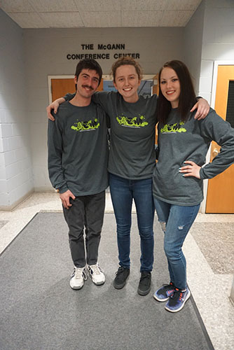
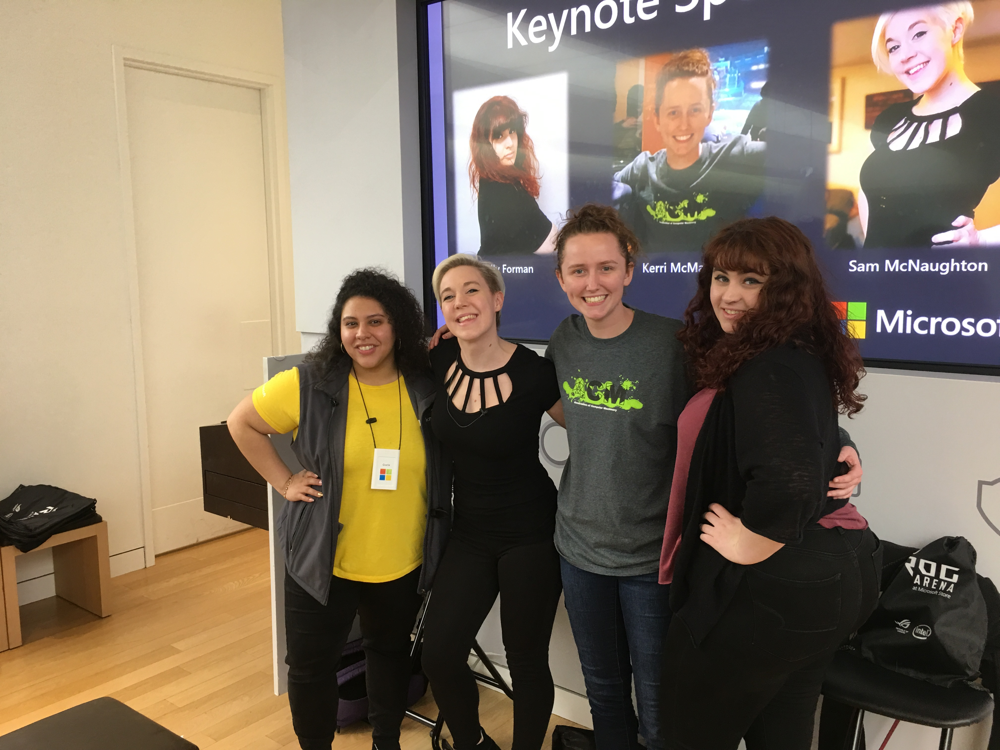

Notable Extracirricular Activities
Association for Computing Machinery President, St. Joseph's College
In May 2017, I was elected President of the ACM organization on campus. This is my favorite activity that I do because it is my chance to provide a "third place" experience for those interested in the field and to serve as a valuable access to information for computer science students on campus. We host many events including our annual Super Smash Brothers videogame Tournament Fundraiser; all proceeds grossed from this fundraiser is donated to the National Brain Tumor Society, in lieu of a fellow SJC computer science student who has been diagnosed with a tumor.
ACM executive board 2019
Guest Panelist at Microsoft Store
In March 2019, I was invited to speak at an event held at a Microsoft store about what it is like being a woman in the technology industry. There, I hels many critical and productive conversations about the known inequality of women in this field, and spoke with many dertermined women with the same goals as me about what we can do as a collective to further the effrts already in place to promote women in the industry, and to end any stigmas against women in technology.
The other keynote speakers and I - Microsoft Women in Technology Celebration